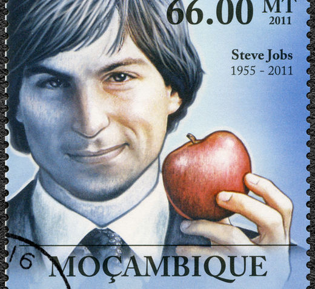

BACK STORY
"Is life not a thousand times too short for us to bore ourselves"
Frederick Nietze
Come rain or shine, we all have principles that we steadfastly stick to, don't we?
Well, the code that I hold dear to my heart, underpinning and driving all my ideas, are the below quotes from the world of philosophy, advertising, and technology.
Frederick Nietze
Why, I conjectured would businesses and services sell their products and services in a polar opposite style to what we choose to enjoy in our leisure time? For gravitas? For credibility? But the Economist and Vanity Fair manage to be the voice of authority and simultaneously be page turners.
There was a clear pattern why some company's made the short list, regardless how good their product was. So rather than reining in my strong compulsion to critique vendors offering, I decided to cut loose and join the other side. Become a messaging strategist and copywriter offering solutions for business' who are less interested in fitting in, and more interested in find the best way to grow.
David Oligilvy
I passionately, fervently, deeply believe, based on experience, that there are three key tasty ingredients that need to be applied to ensure your visitors are literally glued to your business. The ingredients are the three ‘E’ s, which every messaging needs to include.
EDUCATIONAL + EMOTIVE + ENTERTAINING = FEROCIOUSLY ENGAGING Messaging
Steve Jobs
When Steve Jobs made the speech (which the above quote is from) he was referring to when he dropped out of college, taking any class that suited him. One of those classes was calligraphy, which continued to influence him years later when he created the first home computer with font options.
Just like Steve, you’re probably at the stage where you are consolidating all the dots. It's certainly the case for me.
15 years of delivering branding strategy. Supported by American Writers and Artist Copywriting Courses, a Software Engineering Postgraduate and a Finance and Business BA Hons - coupled with my near-obsessive passion of films, philosophy, journalism, and literature throughout my life, means I have a number of dots to connect.
The type of dots, that once connected can remould and rethink complex services and products - then communicate in a way which is fascinating for both subject matter experts and the layman.
Or get in touch for a free consultation